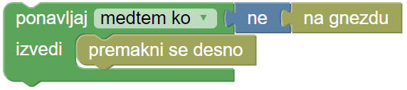
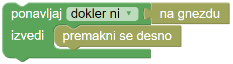

Eva v šoli
Eva je dovolj zrasla, da se je lahko pridružila šoli za bube. Pri pouku se učijo veliko zanimivih stvari, med drugim tudi to, da nekatere gosenice v času preden se zabubujo, zaužijejo toliko hrane, da ta presega njihovo osnovno telesno težo za neverjetnih 27000 krat! Med odmori pa je seveda čas za malico, Eva ima na izbiro različno sadje, ki pa ga lahko poje samo na določenih mestih, ki so označena z barvo sadeža.
Pri naslednji uri so se mlade gosenice učile o izjemno hitri in eksponentni rasti gosenic, te lahko zrastejo tudi 1000x svoje prvotne velikosti. Nič čudnega, da gosenice zaužijejo toliko hrane. Med rastjo se njihova mehka koža raztegne, ko pa postane premajhna, se gosenica levi. Dokler se ne zabubi, se lahko gosenica levi do 6 krat. Ob vsem tem govoru o rasti, so morali uro predčasno prekiniti in sestradane učenke in učence spustiti na malico. Napiši program tako, da bo Eva na označenih mestih pojedla sadeže.
Na zadnji uri je bila na vrsti biologija. Gosenice so se naučile, da imajo v telesu kar 4000 mišic! Za primerjavo, človek jih ima le 629, čeprav je toliko večji. Vemo, da že naše mišice porabljajo zelo veliko energije, kaj šele 4000 mišic! Ob šokantnem spoznanju so gosenice brž pohitele na kosilo in se pogostile s sadeži.
Na voljo imaš programska bloka: ponavljaj medtem ko in ponavljaj dokler ni. Bloka uporabljamo takrat, ko ne vemo, koliko ponovitev bo potrebno izvesti za pravilno rešitev naloge. Bloka uporabljaj na način, kot je prikazan v grafiki spodaj.
 ali 

Naloga vsebuje dva testa z različnim položajem gnezdain z različnim številom zrn. Tvoj program mora delovati na obeh.